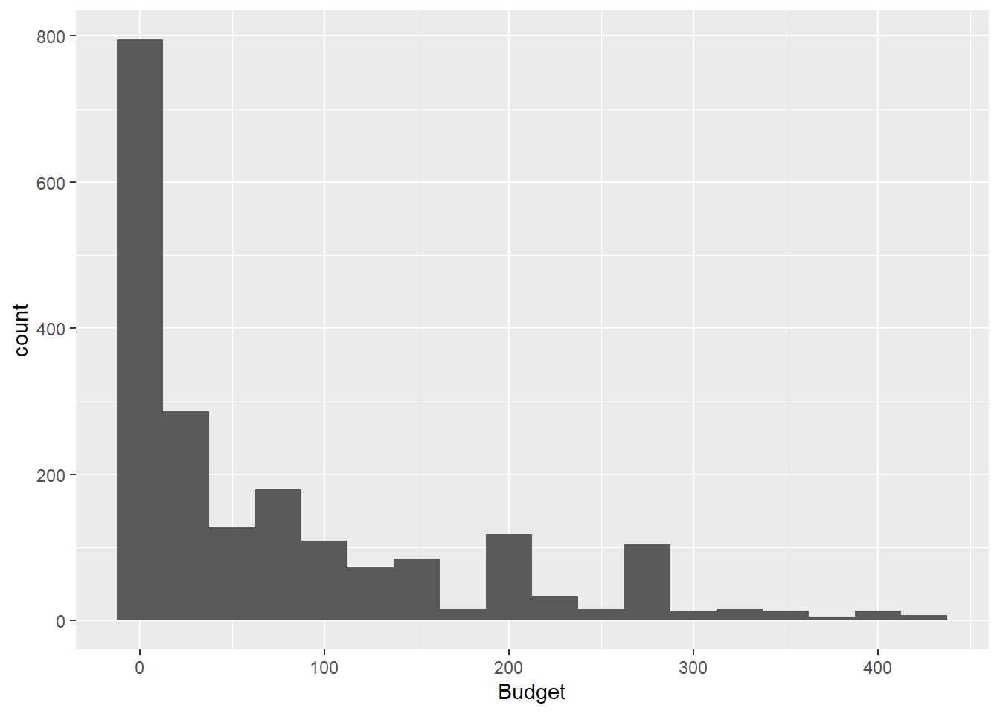
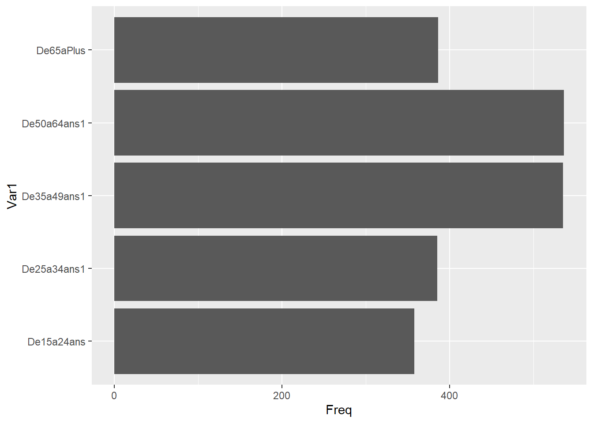
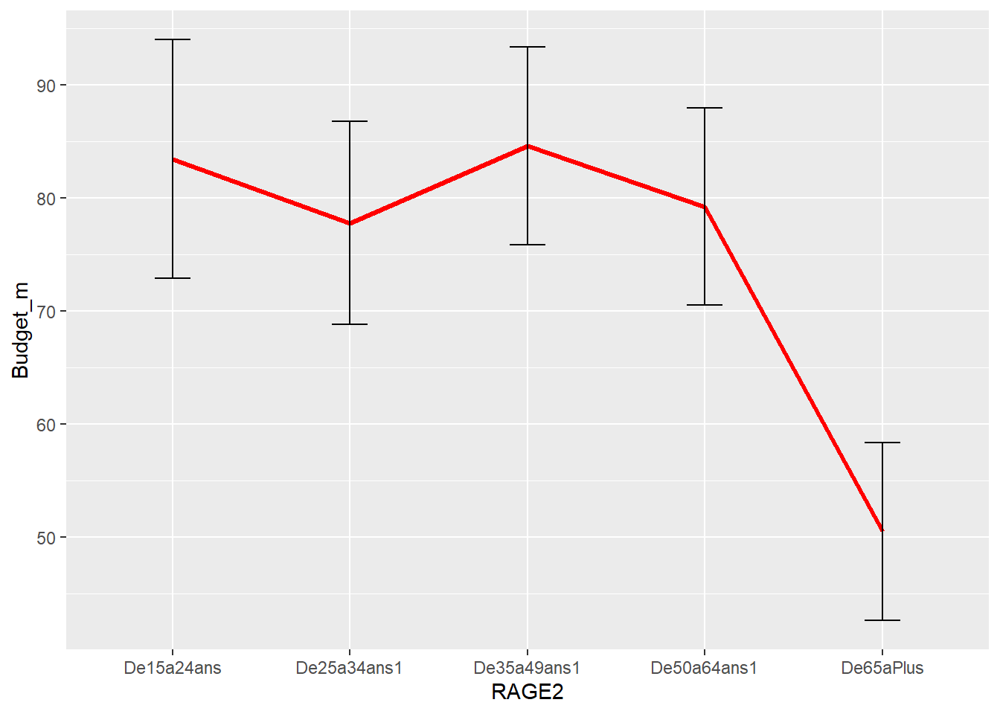
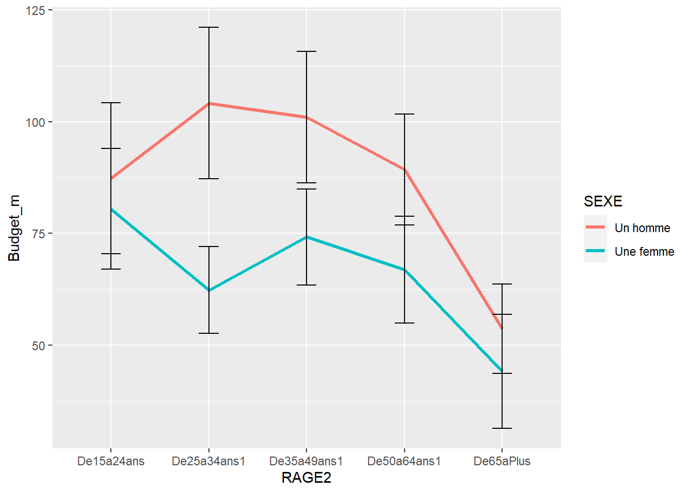
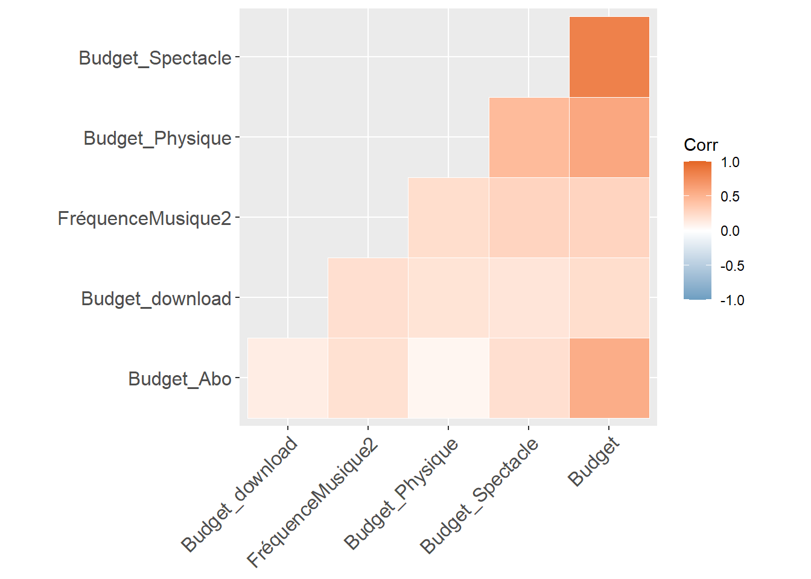
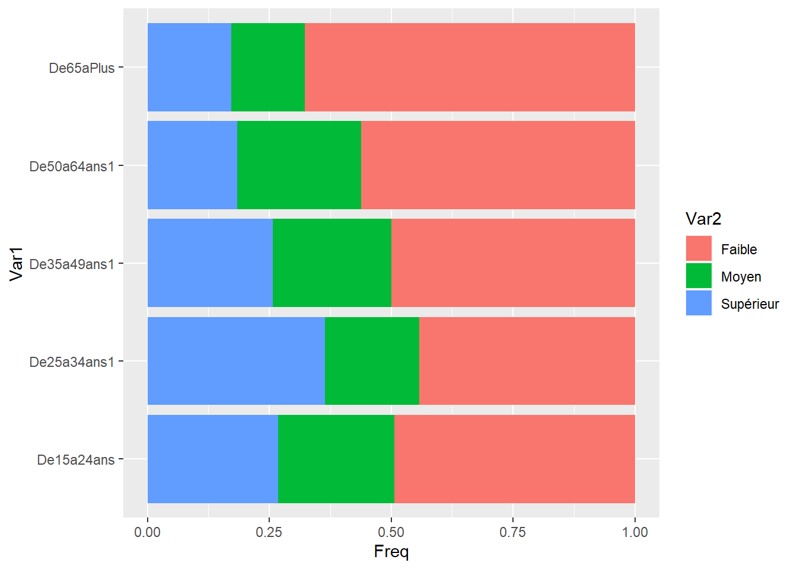

library(tidyverse)
library(readr)Avertissement
Le code est humain, le commentaire est fourni par Bard. On sera donc prudent, même si on a relu ;)
Librairies
La bibliothèque tidyverse est un ensemble de paquets R qui partagent une philosophie de conception commune, appelée “tidy data”. Les données tidy sont organisées en colonnes, avec chaque observation sur une ligne distincte et chaque variable dans une colonne distincte. La bibliothèque tidyverse fournit un ensemble de fonctions cohérentes et faciles à utiliser pour manipuler, analyser et visualiser des données tidy.
La bibliothèque readr est une bibliothèque R pour la lecture de données à partir de fichiers. Elle prend en charge une grande variété de formats de fichiers, notamment CSV, TSV, JSON et XML. La bibliothèque readr fournit des fonctions efficaces et faciles à utiliser pour lire des données à partir de fichiers, même les fichiers volumineux.
Lecture du fichier
Les données proviennent de l’enquête Hadopi en 2020 disponible sur data.gouv.
df <- read_csv("hadopi-2020-musique-data-reduced.csv")Recodage
Ce code R est un exemple simple de la façon de créer une nouvelle variable à partir d’une variable existante.
Voici quelques commentaires supplémentaires sur le code :
La fonction
table()est utilisée pour créer un tableau de contingence.La fonction
replace()est utilisée pour remplacer les valeurs d’une variable.La fonction
as.numeric()est utilisée pour convertir une variable en un type numérique.
#budget
df$Q61_r1_c1[df$Q61_r1_c1=="#NUL!"]<-0
df$Q61_r1_c1[df$Q61_r1_c1=="150 et plus"]<-200
df$Q61_r1_c1[df$Q61_r1_c1=="Entre 100 et 149"]<-125
df$Q61_r1_c1[df$Q61_r1_c1=="Entre 50 et 99"]<-75
df$Q61_r1_c1[df$Q61_r1_c1=="Moins de 50"]<-25
df$Budget_Spectacle<-as.numeric(df$Q61_r1_c1)
table(df$Budget_Spectacle)
0 25 75 125 200
1174 371 264 151 240 table(df$Q61_r2_c1)
#NUL! 0 50 et plus Entre 1 et 49
657 593 426 524 df$Q61_r2_c1[df$Q61_r2_c1=="#NUL!"]<-0
df$Q61_r2_c1[df$Q61_r2_c1=="Entre 1 et 49"]<-25
df$Q61_r2_c1[df$Q61_r2_c1=="50 et plus"]<-75
df$Budget_Physique<-as.numeric(df$Q61_r2_c1)
table(df$Budget_Physique)
0 25 75
1250 524 426 table(df$Q61_r3_c1)
#NUL! 100 et plus Entre 50 et 99 Moins de 50
1812 147 52 189 df$Q61_r3_c1[df$Q61_r3_c1=="#NUL!"]<-0
df$Q61_r3_c1[df$Q61_r3_c1==" Moins de 50"]<-25
df$Q61_r3_c1[df$Q61_r3_c1=="Entre 50 et 99"]<-75
df$Q61_r3_c1[df$Q61_r3_c1=="100 et plus"]<-125
df$Budget_Abo<-as.numeric(df$Q61_r3_c1)
table(df$Budget_Abo)
0 75 125
1812 52 147 table(df$Q61_r4_c1)
#NUL! 20 et plus Moins de 20
1980 97 123 df$Q61_r4_c1[df$Q61_r4_c1=="#NUL!"]<-0
df$Q61_r4_c1[df$Q61_r4_c1=="Moins de 20"]<-10
df$Q61_r4_c1[df$Q61_r4_c1=="20 et plus"]<-30
df$Budget_download<-as.numeric(df$Q61_r4_c1)
table(df$Budget_Physique)
0 25 75
1250 524 426 df$Budget<- (df$Budget_download+df$Budget_Abo+df$Budget_Physique+ df$Budget_Spectacle)Analyse des distributions
Le budget musical
Ce code R crée un histogramme de la variable Budget. L’histogramme montre la distribution des valeurs de la variable.
La ligne 1 crée un objet ggplot(). Cet objet représente le graphique à construire. La ligne 2 spécifie les variables à utiliser pour le graphique. Dans ce cas, la variable Budget est utilisée pour l’axe des abscisses Dans la ligne 3 ajoute la fonction geom_histogram() est utilisée pour créer un histogramme.L’argument binwidth spécifie la largeur des barres de l’histogramme. Dans ce cas, la largeur des barres est de 25.
Ce code R est un exemple simple de la façon de créer un histogramme à l’aide de la bibliothèque ggplot2.
Voici quelques commentaires supplémentaires sur le code :
La fonction
ggplot()est utilisée pour créer un objetggplot().La fonction
aes()est utilisée pour spécifier les variables à utiliser pour le graphique.La fonction
geom_histogram()est utilisée pour créer un histogramme.L’argument
binwidthspécifie la largeur des barres de l’histogramme.
ggplot(df,aes(Budget))+
geom_histogram(binwidth = 25)
Age
Ce code R crée un diagramme à barres horizontales montrant la distribution des âges.
La ligne 1 crée un tableau de contingence de la variable RAGE2. Ce tableau montre la distribution des valeurs de la variable. La ligne 2 convertit le tableau de contingence en un data frame. La ligne 3 crée un graphique à barres. La fonction geom_bar() est utilisée pour créer les barres du graphique. L’argument stat spécifie le type de statistique à utiliser pour calculer les hauteurs des barres. Dans ce cas, la statistique identity est utilisée, ce qui signifie que les hauteurs des barres sont égales aux valeurs de la variable Freq. La ligne 4 inverse l’axe des abscisses et l’axe des ordonnées.
Ce code R est un exemple simple de la façon de créer un diagramme à barres horizontal à l’aide de la bibliothèque ggplot2.
t<-table(df$RAGE2)%>%
as.data.frame()
ggplot(t,aes(x=Var1, y=Freq))+
geom_bar(stat="identity")+
coord_flip()
Analyse bi variée
Comparaison de moyennes
Ce code crée un graphique en ligne avec des barres d’erreur montrant l’évolution du budget moyen en fonction de l’âge.
La ligne 1 crée un nouveau data frame, foo, qui contient le budget moyen, le nombre d’observations et l’erreur standard du budget moyen pour chaque groupe d’âge. La ligne 2 crée un graphique en ligne à l’aide de la bibliothèque ggplot2. La variable RAGE2 est utilisée pour l’axe des abscisses et la variable Budget_m est utilisée pour l’axe des ordonnées.
La ligne 3 ajoute une ligne rouge au graphique et la ligne 4 ajoute des barres d’erreur au graphique. Les barres d’erreur représentent l’erreur standard du budget moyen. Ce code crée un graphique en ligne avec des barres d’erreur montrant l’évolution du budget moyen en fonction de l’âge. Les barres d’erreur représentent l’incertitude de la mesure du budget moyen.
foo<-df %>%
group_by(RAGE2)%>%
summarise(Budget_m=mean(Budget, na.rm=TRUE),
n=n(),
Budget_se=1.96*sd(Budget,na.rm=TRUE)/sqrt((n-1)))
ggplot(foo, aes(x= RAGE2, y=Budget_m, group = 1))+
geom_line(size=1.2, color="red")+
geom_errorbar(aes(ymin = Budget_m-Budget_se,
ymax = Budget_m+Budget_se),
width = 0.2)
On peut souhaiter tester la différences des moyennes. L’anova est la méthode adéquate
fit<- lm(Budget~RAGE2, data=df)
anova(fit)Analysis of Variance Table
Response: Budget
Df Sum Sq Mean Sq F value Pr(>F)
RAGE2 4 300373 75093 8.0463 1.963e-06 ***
Residuals 2006 18721235 9333
---
Signif. codes: 0 '***' 0.001 '**' 0.01 '*' 0.05 '.' 0.1 ' ' 1summary(fit)
Call:
lm(formula = Budget ~ RAGE2, data = df)
Residuals:
Min 1Q Median 3Q Max
-84.59 -77.79 -48.44 45.41 350.77
Coefficients:
Estimate Std. Error t value Pr(>|t|)
(Intercept) 83.440 5.596 14.910 < 2e-16 ***
RAGE2De25a34ans1 -5.651 7.635 -0.740 0.459
RAGE2De35a49ans1 1.149 7.108 0.162 0.872
RAGE2De50a64ans1 -4.206 7.046 -0.597 0.551
RAGE2De65aPlus -32.942 7.510 -4.386 1.21e-05 ***
---
Signif. codes: 0 '***' 0.001 '**' 0.01 '*' 0.05 '.' 0.1 ' ' 1
Residual standard error: 96.61 on 2006 degrees of freedom
(189 observations deleted due to missingness)
Multiple R-squared: 0.01579, Adjusted R-squared: 0.01383
F-statistic: 8.046 on 4 and 2006 DF, p-value: 1.963e-06Si nous étions exigeants, on se dirait que le budget n’est pas vraiment quantitaif, mais juste ordinal. Dans ce cas le bon test est celui de Kruskall-Wallis.
A deux facteur peut souhaiter tester la différences des moyennes. L’anova est la méthode adéquate
fit<- lm(Budget~RAGE2+SEXE, data=df)
anova(fit)Analysis of Variance Table
Response: Budget
Df Sum Sq Mean Sq F value Pr(>F)
RAGE2 4 300373 75093 8.1441 1.637e-06 ***
SEXE 1 233995 233995 25.3775 5.136e-07 ***
Residuals 2005 18487240 9221
---
Signif. codes: 0 '***' 0.001 '**' 0.01 '*' 0.05 '.' 0.1 ' ' 1summary(fit)
Call:
lm(formula = Budget ~ RAGE2 + SEXE, data = df)
Residuals:
Min 1Q Median 3Q Max
-98.11 -69.60 -35.75 39.25 356.21
Coefficients:
Estimate Std. Error t value Pr(>|t|)
(Intercept) 95.913 6.089 15.753 < 2e-16 ***
RAGE2De25a34ans1 -4.184 7.594 -0.551 0.582
RAGE2De35a49ans1 2.197 7.068 0.311 0.756
RAGE2De50a64ans1 -6.768 7.022 -0.964 0.335
RAGE2De65aPlus -38.041 7.533 -5.050 4.83e-07 ***
SEXEUne femme -22.126 4.392 -5.038 5.14e-07 ***
---
Signif. codes: 0 '***' 0.001 '**' 0.01 '*' 0.05 '.' 0.1 ' ' 1
Residual standard error: 96.02 on 2005 degrees of freedom
(189 observations deleted due to missingness)
Multiple R-squared: 0.02809, Adjusted R-squared: 0.02567
F-statistic: 11.59 on 5 and 2005 DF, p-value: 4.654e-11Examinons les résultats
foo<-df %>%
group_by(RAGE2, SEXE)%>%
summarise(Budget_m=mean(Budget, na.rm=TRUE),
n=n(),
Budget_se=1.96*sd(Budget,na.rm=TRUE)/sqrt((n-1))) #rerreur type d'échantillonnage
ggplot(foo, aes(x= RAGE2, y=Budget_m, group = SEXE))+
geom_line(size=1.2, aes(color=SEXE))+
geom_errorbar(aes(ymin = Budget_m-Budget_se,
ymax = Budget_m+Budget_se),
width = 0.2)
fit<- lm(log(Budget+1)~RAGE2*SEXE, data=df)
anova(fit)Analysis of Variance Table
Response: log(Budget + 1)
Df Sum Sq Mean Sq F value Pr(>F)
RAGE2 4 254.9 63.723 12.6694 3.489e-10 ***
SEXE 1 131.1 131.084 26.0621 3.619e-07 ***
RAGE2:SEXE 4 60.5 15.131 3.0083 0.01733 *
Residuals 2001 10064.4 5.030
---
Signif. codes: 0 '***' 0.001 '**' 0.01 '*' 0.05 '.' 0.1 ' ' 1summary(fit)
Call:
lm(formula = log(Budget + 1) ~ RAGE2 * SEXE, data = df)
Residuals:
Min 1Q Median 3Q Max
-3.763 -2.358 0.591 2.004 3.939
Coefficients:
Estimate Std. Error t value Pr(>|t|)
(Intercept) 2.98800 0.19670 15.191 < 2e-16 ***
RAGE2De25a34ans1 0.77526 0.27926 2.776 0.005552 **
RAGE2De35a49ans1 0.45138 0.25554 1.766 0.077487 .
RAGE2De50a64ans1 -0.17110 0.23788 -0.719 0.472063
RAGE2De65aPlus -0.81578 0.24284 -3.359 0.000796 ***
SEXEUne femme 0.02515 0.26197 0.096 0.923519
RAGE2De25a34ans1:SEXEUne femme -1.12130 0.36193 -3.098 0.001975 **
RAGE2De35a49ans1:SEXEUne femme -0.76329 0.33493 -2.279 0.022774 *
RAGE2De50a64ans1:SEXEUne femme -0.48450 0.32953 -1.470 0.141641
RAGE2De65aPlus:SEXEUne femme -0.27529 0.35982 -0.765 0.444313
---
Signif. codes: 0 '***' 0.001 '**' 0.01 '*' 0.05 '.' 0.1 ' ' 1
Residual standard error: 2.243 on 2001 degrees of freedom
(189 observations deleted due to missingness)
Multiple R-squared: 0.04248, Adjusted R-squared: 0.03817
F-statistic: 9.864 on 9 and 2001 DF, p-value: 6.463e-15Corrélation
Le code R que vous avez fourni crée un corrélogramme à l’aide de la fonction ggcorrplot(). La première ligne de code sélectionne les colonnes 50 à 53 du data frame df. Ce sont les variables de budget : où dépense-t-on de l’argent en matière de musique : des concerts, des vynils, des téléchargement, des abonnements à spotify.
La deuxième ligne de code remplace les valeurs NA par des 0. Cela est nécessaire car la fonction cor() ne peut pas gérer les valeurs NA. La troisième ligne de code calcule la matrice de corrélation des colonnes sélectionnées. La quatrième ligne de code charge la bibliothèque ggcorrplot pour une représentation plus visuelle. La cinquième ligne de code crée le corrélogramme. Les arguments suivants sont utilisés :
hc.order=TRUE: indique à la fonction de réorganiser les variables en fonction de leur corrélation. ( un modèle de clustering basique)type="lower": indique à la fonction de tracer la partie inférieure de la matrice de corrélation.outline.col="white": indique à la fonction de tracer un contour blanc autour des cellules du corrélogramme.ggtheme=ggplot2::theme_gray: indique à la fonction d’utiliser le thème graphique gris de ggplot2.colors=c("#6D9EC1", "white", "#E46726"): indique à la fonction d’utiliser les couleurs spécifiées pour le corrélogramme.
Le corrélogramme sera affiché dans une nouvelle fenêtre graphique. Les cellules du corrélogramme seront colorées en fonction de la valeur de la corrélation, du plus clair au plus foncé. Les corrélations positives seront affichées en bleu et les corrélations négatives en rouge.
foo<- df%>%
select(50,51,52,53)%>%
replace(is.na(.), 0)
r<- cor(foo)
r Budget_Spectacle Budget_Physique Budget_Abo Budget_download
Budget_Spectacle 1.0000000 0.45291296 0.21383634 0.1699954
Budget_Physique 0.4529130 1.00000000 0.06093832 0.1825218
Budget_Abo 0.2138363 0.06093832 1.00000000 0.1230690
Budget_download 0.1699954 0.18252180 0.12306895 1.0000000library(ggcorrplot)
ggcorrplot(r, hc.order = TRUE, type = "lower",
outline.col = "white",
ggtheme = ggplot2::theme_gray,
colors = c("#6D9EC1", "white", "#E46726"))
Tableau croisé
Ce code crée un diagramme à barres montrant la distribution des âges par classe de budget.
La première ligne de code crée une nouvelle variable, Budget_class, qui classifie les budgets en trois catégories : “Faible”, “Moyen” et “Supérieur”. Cette classification est effectuée à l’aide de la fonction ifelse(), qui prend trois arguments : une condition, une valeur à retourner si la condition est vraie et une valeur à retourner si la condition est fausse. Dans ce cas, la condition est que le budget soit inférieur à 50, supérieur à 149 ou entre 50 et 149.
La deuxième ligne de code crée un tableau de contingence croisant l’âge et la classe de budget. La fonction table() est utilisée pour compter le nombre d’observations dans chaque cellule du tableau. La fonction prop.table() est ensuite utilisée pour calculer les proportions marginales, c’est-à-dire les proportions des observations dans chaque catégorie d’âge et de classe de budget. Ce tableau de contingence est transcrit un data frame. Cette étape est nécessaire car la fonction ggplot() ne peut pas prendre un tableau de contingence en entrée.
La troisème ligne de code crée un diagramme à barres à l’aide de la fonction ggplot(). Les arguments aes() sont utilisés pour spécifier les variables à utiliser pour l’axe des x, l’axe des y et la couleur des barres. La fonction geom_bar() est ensuite utilisée pour créer les barres du diagramme.
foo <- df %>%
mutate(Budget_class= ifelse(Budget<50, "Faible",
ifelse(Budget>149, "Moyen", "Supérieur")))
t<-prop.table(table(foo$RAGE2, foo$Budget_class), 1) %>%
as.data.frame()
ggplot(t, aes(x=Var1,y=Freq, group=Var2))+
geom_bar(stat="identity", aes(fill=Var2))
Un petit test du chi² ferait du bien. Il est extrêmement significatif.
khi_test = chisq.test(table(foo$RAGE2, foo$Budget_class))
khi_test # affiche le résultat du test
Pearson's Chi-squared test
data: table(foo$RAGE2, foo$Budget_class)
X-squared = 72.698, df = 8, p-value = 1.424e-12